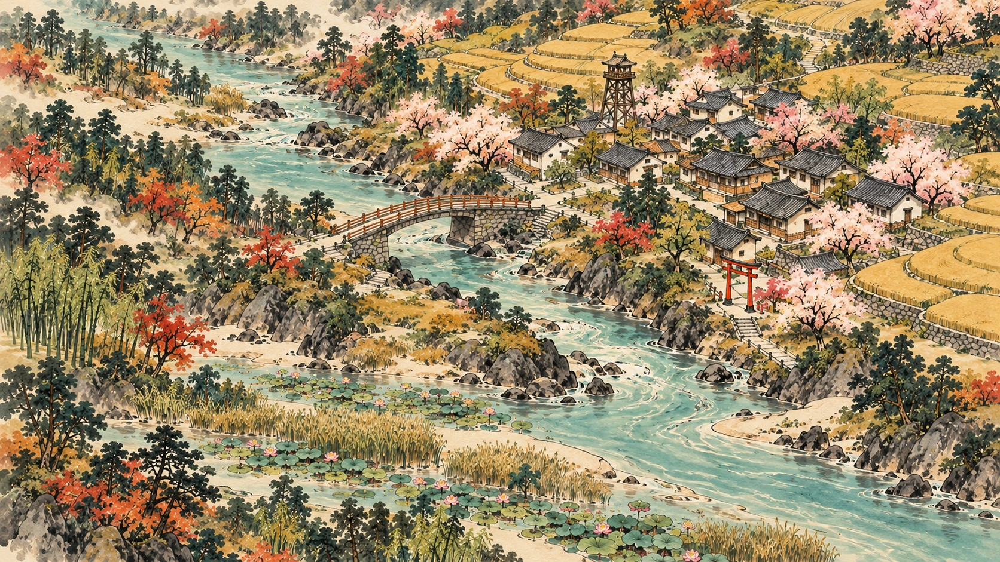
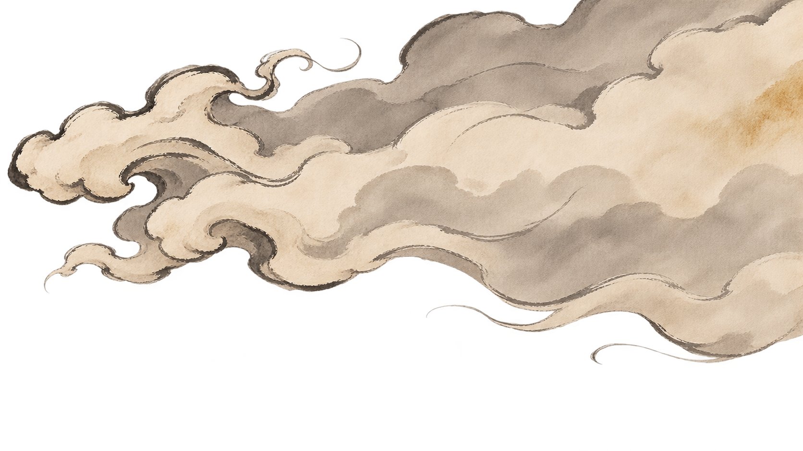
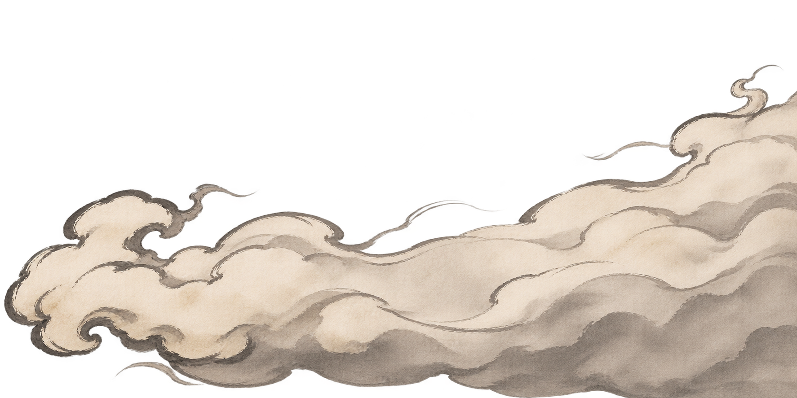
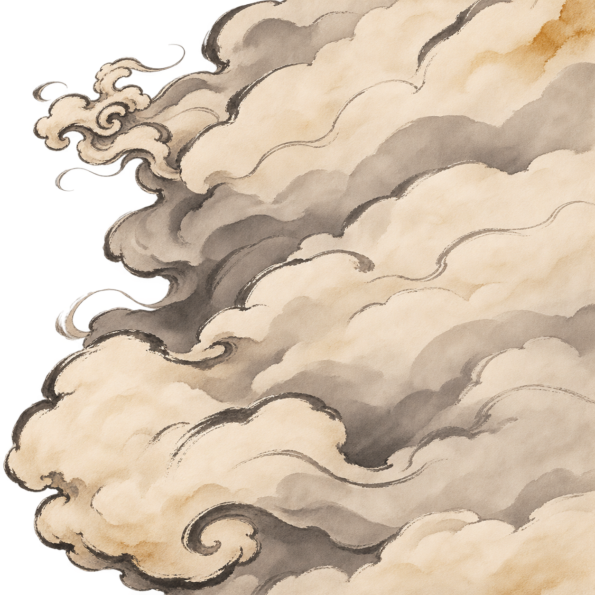
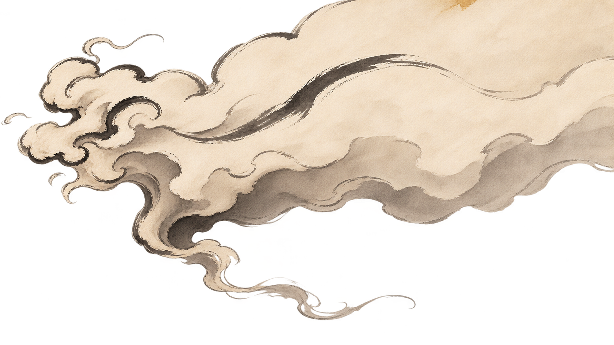
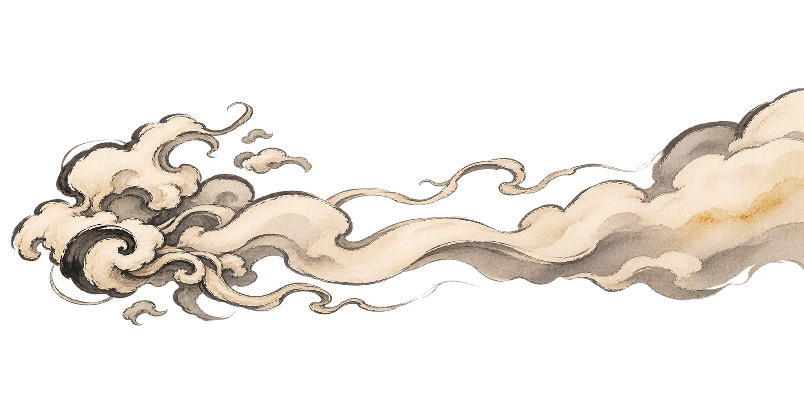
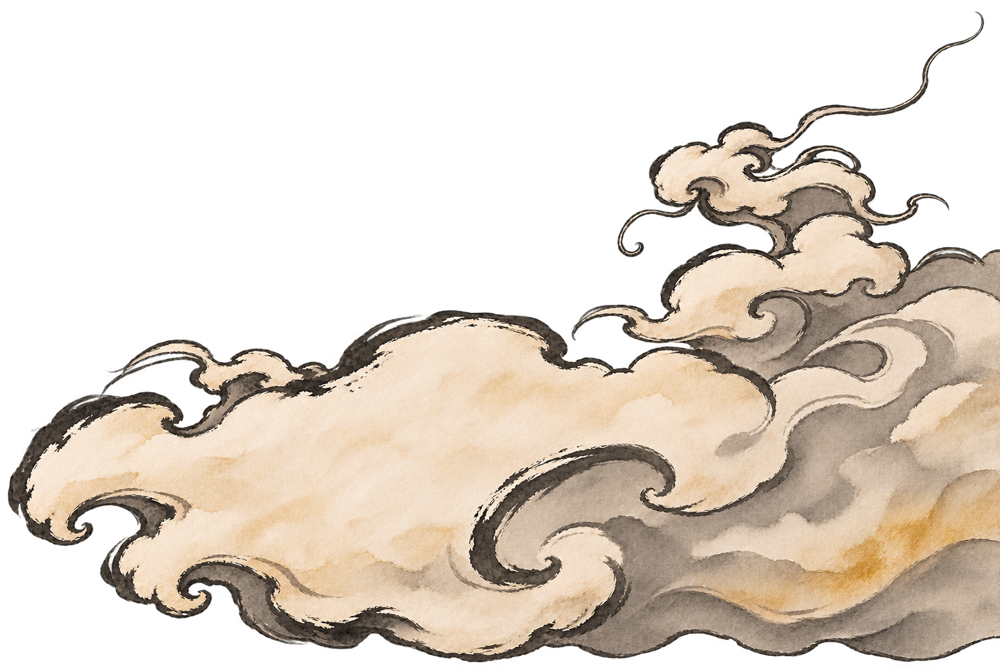

Loading six cloud layers…
The preview starts partway through the entrance. Press Play sweep, or drag Progress forward and backward to inspect the staggered motion. Closed frame shows the overlap while the landscape changes underneath.
01 · rear
Rear upper veil
Quiet upper bank with thin outlines and shallow, uneven lobes.
02 · rear
Rear lower shelf
Low, broad cloud shelf with a bottom-heavy silhouette.
03 · middle
Middle cloud wall
Dense coverage with a small high tangle and a large low cloud head.
04 · middle
Middle overhang
A broad pale overhang and one long trailing pendant.
05 · front
Foreground whiskers
Fine interwoven curls and black ink gestures along a low leading knot.
06 · front
Foreground low billow
A large quiet ivory billow with a strong dark brush contour.